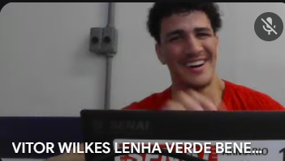

💥 CLIQUE AQUI PARA BAIXAR MINECRAFT GRÁTIS 💥
Baixando arquivos do jogo... 0%
⚠️ ALERTA DE PERIGO ⚠️

Você tentou escapar! O
Freitas
foi detectado a exatamente 1 metro de distância de você.
Se Prevenir